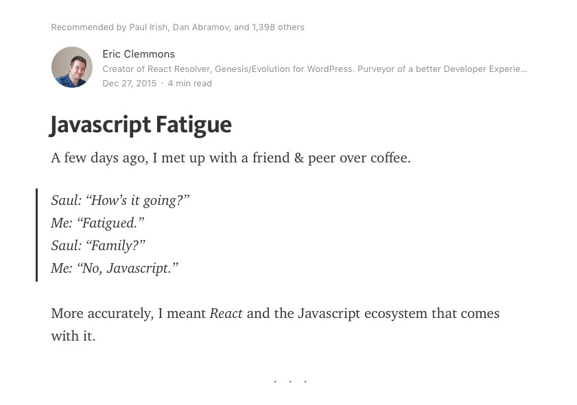
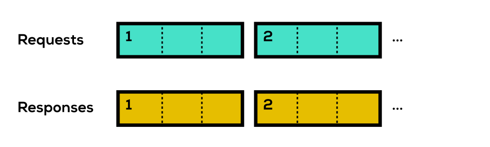
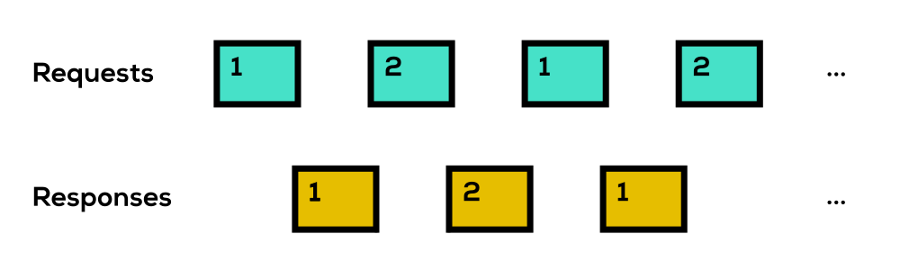

layout: true class: slides-centered --- class: theme-whiskey ??? - Who thinks that frontend development has become more complex in the past 5 years? --- class: slides-chapter, theme-whiskey ## 2015 was the year of<br>»JavaScript Fatigue« ??? - People will remember the year of 2015 as the year of the JavaScript Fatigue --- .slides-content[  ] ??? - Excellent article by Eric Clemmons - Published in Dec 2015 - About the explosion of libraries and tools in the JavaScript ecosystem --- .slides-content[ | ------:|------- Custom languages | Linters | <img src="assets/tools-linters.jpg" height="35"> Bundlers | Minifiers | Devtools | Task runners | DOM libraries | Routing libraries | State libraries | Package managers | <img src="assets/tools-package-managers.jpg" height="35"> ] --- This was in the end of 2015... -- ### ...but now it's 2017, so we're in the future, right? --- .slides-content[ Support of new web platform features<br>in modern browsers.slides-footnote-mark[1] | :-------|:---------------- <h4 style="margin: 0">HTTP2</h4> | 73% <h4 style="margin: 0">ES2015</h4> | 79% <h4 style="margin: 0">Web Components</h4> | 60% .slides-footnote[ 1. HTTP2 from [caniuse.com](http://caniuse.com/#feat=http2), ES2015 from [kangax.github.io](http://kangax.github.io/compat-table/es6/), Web Components from [webcomponents.org](http://webcomponents.org/).<br> All data was collected in January 2017. Please note: Only the most recent version of a browser was taken into account. This does not reflect the actual global distribution. Please note also: The Web Components specs have not been finished yet. ] ] ??? - There are exciting new features - And browser support is getting better - How do these new features change the way we work? - Will we even need those tools at all? - That's the topic of my talk: --- layout: true class: theme-whiskey, slides-left --- name: cover # About the future<br>of frontend tooling Johannes Ewald<br> Peerigon GmbH<br> [@jhnnns](https://twitter.com/jhnnns) <img id="slide-cover-img" src="./assets/peerigon-logo.png" width="400"> ??? - Johannes Ewald - Founded a company with my friends called Peerigon - Twitter handle: jhnnns --- layout: true class: theme-whiskey, slides-centered --- webpack core team --- class: slides-chapter, theme-whiskey ## ES2015 modules --- layout: true class: slides-centered, theme-whiskey --- .slides-columns.slides-content[ .col[ <div style="text-align: center; font-weight: bold">ES2015</div> <div style="text-align: center; color: grey">a.js</div> ```javascript export default 42; ``` <div style="text-align: center; color: grey">main.js</div> ```javascript import magicNumber from "./a.js"; ``` ] ] --- .slides-columns.slides-content[ .col[ <div style="text-align: center; font-weight: bold">ES2015</div> <div style="text-align: center; color: grey">a.js</div> ```javascript export default 42; ``` <div style="text-align: center; color: grey">main.js</div> ```javascript import magicNumber from "./a.js"; ``` ] .col[ <div style="text-align: center; font-weight: bold">CommonJS</div> <div style="text-align: center; color: grey">a.js</div> ```javascript module.exports = 42; ``` <div style="text-align: center; color: grey">main.js</div> ```javascript const magicNumber = require("./a.js"); ``` ] ] --- ES2015 and CommonJS look very similar, but there are two important differences. --- .slides-content[ .slides-columns[ .col[ <div style="text-align: center; font-weight: bold">CommonJS</div> <div style="text-align: center;">Dynamic imports possible</div> ```javascript const a = require(pathToA); // totally valid ``` ] .col[ <div style="text-align: center; font-weight: bold">ES2015</div> <div style="text-align: center;">Only static imports</div> ```javascript import a from pathToA; // throws a SyntaxError ``` ] ] ] --- .slides-content[ .slides-columns[ .col[ <div style="text-align: center; font-weight: bold">CommonJS</div> <div style="text-align: center;">Copied values</div> <div style="text-align: center; color: grey">a.js</div> ```javascript exports.value = 42; exports.incr = function () { exports.value++; }; ``` <div style="text-align: center; color: grey">main.js</div> ```javascript let { value, incr } = require("./a"); incr(); console.log(value); // 42 ``` ] .col[ <div style="text-align: center; font-weight: bold">ES2015</div> <div style="text-align: center;">Live values</div> <div style="text-align: center; color: grey">a.js</div> ```javascript export let value = 42; export function incr() { value++; } ``` <div style="text-align: center; color: grey">main.js</div> ```javascript import { value, incr } from "./a.js"; incr(); console.log(value); // 43 ``` ] ] ] --- These properties make ES2015 modules less flexible than CommonJS... -- ...but they're also the foundation for: **Tree-shaking** --- .slides-content[ <div style="text-align: center; font-weight: bold">Tree-shaking with ES2015</div> <div style="text-align: center; color: grey">a.js</div> ```javascript export let value = 42; export function incr() { value++; } export function decr() { value++; } ``` <div style="text-align: center; color: grey">main.js</div> ```javascript import { incr } from "./a.js"; incr(); ``` ] --- .slides-content[ <div style="text-align: center; font-weight: bold">Tree-shaking with ES2015</div> <div style="text-align: center; color: grey">a.js</div> ```javascript let value = 42; export function incr() { value++; } ``` <div style="text-align: center; color: grey">main.js</div> ```javascript import { incr } from "./a.js"; incr(); ``` ] --- The static nature of ES2015 modules makes it possible<br> to trace all the exports that are actually used. --- layout: true class: slides-chapter, theme-danger --- #### But... ...with a static module system, how do we load things on demand? <span style="font-size: 3rem; font-weight: bold">( ☉д⊙)</span> --- layout: true class: slides-centered, theme-whiskey --- `import()` all the things! <img src="assets/all-the-things-1.png" style="max-width: 100%;"> --- .slides-content[ There will be a special `import()` function that allows<br> to resolve dynamic dependencies asynchronously: ```javascript import("some-module") .then(someModule => { ... }) .catch(error => { ... }); ``` https://github.com/tc39/proposal-dynamic-import ] --- **But...** things aren't finished yet. <img src="assets/all-the-things-2.jpg" style="max-width: 100%;"> --- `import()` recently reached stage 3 of the TC39 process and<br> requires feedback from implementations and users. --- But `import()` also requires very platform-specific implementations<br> (e.g. for loading modules) and many things need to be considered. --- That's why platform-dependent things have been excluded from ES2015 and<br> will be specified as separate ["Loader Standard"](https://github.com/whatwg/loader) by the WHATWG. --- > The JavaScript Loader allows host environments, like Node.js and browsers, to fetch and load modules on demand. It provides a hookable pipeline, to allow front-end packaging solutions like Browserify, WebPack and jspm to hook into the loading process. .slides-quote-ref[https://whatwg.github.io/loader/#intro] --- layout: true class: slides-chapter, theme-danger --- #### So... ...once we can load modules natively in the browser,<br> do we even need tools like browserify and webpack anymore? <span style="font-size: 3rem; font-weight: bold">ಠಿ_ಠ</span> --- layout: true class: slides-centered, theme-whiskey --- #### Well... ...to answer this question, we should take<br> a look at another new technology first. --- layout: true class: slides-chapter, theme-whiskey --- ## HTTP2 ??? - I won't talk about all the features of HTTP2 like header compression - Just the ones that might have a big impact on our tools --- layout: true class: slides-centered, theme-whiskey --- ### Feature 1:<br>HTTP2 is a binary protocol --- .slides-content[ <img src="assets/http2-1.svg" width="800" style="margin-left: auto; margin-right: auto;"> Requests and responses are streams. ] --- .slides-content[  Streams are divided into frames. ] --- .slides-content[  Frames can be interleaved. ] --- .slides-content[ <img src="assets/http2-4.svg" width="800" style="margin-left: auto; margin-right: auto;"> Now we have multiple requests and responses simultaneously on a single TCP connection. ] --- This eliminates HTTP1's problem of **head-of-line blocking**....<br> ...and questions some of our best practices, like: - Bundling multiple resources into one file to avoid requests - Domain sharding ??? - Head-of-line blocking = With HTTP 1.x we must wait for a response before sending the next request --- layout: true class: slides-chapter, theme-danger --- #### Great! So, let's get rid of all the bundlers and just include our development files. <span style="font-size: 3rem; font-weight: bold">(ノಠ益ಠ)ノ彡┻━┻</span> --- layout: true class: slides-centered, theme-whiskey --- ...not so fast... <span style="font-size: 3rem; font-weight: bold">(ヘ･_･)ヘ┳━┳</span> --- #### Problem 1:<br>Tree-shaking .slides-content[ When there are no bundlers, who is doing the tree-shaking?<br> We still need a tool that operates on the dependency graph. ] --- #### Problem 2:<br>Minification .slides-content[ We still need a tool for HTML, CSS and JS minification. ] --- #### Problem 3:<br>Compression .slides-content[ `gzip` compression is good at removing repetition.<br> It compresses one big file more effectively than many small files. <small>See also http://engineering.khanacademy.org/posts/js-packaging-http2.htm</small> ] --- #### Problem 4:<br>Roundtrip .slides-content[ The browser can only discover additional dependencies after<br>the response has been received and parsed. ] --- <img src="assets/roundtrip.svg" width="500" style="margin-left: auto; margin-right: auto;"> ??? - Similar to head-of-line blocking - AKA: The AMD problem - Server push to the rescue [Roundtrip Schaubild] --- ### Feature 2:<br>Server push --- With HTTP2 the server is able to push a resource pro-actively to the client.<br> Now, when the client requests this resource, it becomes instantly available and cached. ??? - Server: "I've just sent you index.html, you'll likely also need styles.css and user.jpg" - The resources are not directly cached, the client needs to make a request for it --- What do we need to provide server push? --- A dependency tree for each file: .slides-columns[ .col[ <div style="color: grey; text-align: center">index.html</div> ```javascript { "/css/app.css": { "type": "style", "weight": 1 }, "/js/app.js": { "type": "script", "weight": 1 } } ``` ] ] <small>Output of Google's [`http2-push-manifest`](https://github.com/GoogleChrome/http2-push-manifest)</small> --- A dependency tree for each file: .slides-columns[ .col[ <div style="color: grey; text-align: center">index.html</div> ```javascript { "/css/app.css": { "type": "style", "weight": 1 }, "/js/app.js": { "type": "script", "weight": 1 } } ``` ] .col[ <div style="color: grey; text-align: center">app.css</div> ```javascript { "/img/logo.jpg": { "type": "image", "weight": 1 } } ``` ] ] <small>Output of Google's [`http2-push-manifest`](https://github.com/GoogleChrome/http2-push-manifest)</small> --- How do we get this dependency tree? -- - traffic analysis using the `Referer` header - tools like bundlers which are able to figure out the dependency graph --- layout: true class: slides-chapter, theme-danger --- #### Great! So, let's figure out the dependency graph and push everything to the client. <span style="font-size: 3rem; font-weight: bold">(ノಠ益ಠ)ノ彡┻━┻</span> --- layout: true class: slides-centered, theme-whiskey --- ...not so fast... <span style="font-size: 3rem; font-weight: bold">(ヘ･_･)ヘ┳━┳</span> --- #### Problem 1:<br>Responsive images .slides-content[ We need information about the client because we don't want to<br> push high-resolution images to small screens. ] --- #### Problem 2:<br>Cache .slides-content[ We need to know what the client has already cached,<br> otherwise we would waste precious bandwidth. <small>Proposed solution: [Cache digests](https://tools.ietf.org/html/draft-ietf-httpbis-cache-digest-00)</small> ] --- #### Problem 3:<br>Authorization .slides-content[ Don't push confidential resources to the client.<br> Push basically requires the same authorization flow as requests. ] --- #### Problem 4:<br>Third-party servers .slides-content[ Resources from other servers like CDNs<br> cannot be pushed because we need an initial request. ] --- #### Problem 5:<br>Prioritization .slides-content[ Pushing resources with no prioritization actually **harms** performance. <small>See https://docs.google.com/document/d/1K0NykTXBbbbTlv60t5MyJvXjqKGsCVNYHyLEXIxYMv0/preview</small> ] --- ```html <head> <link href="main.css" ...> </head> <body> <img src="heavy-image-1.jpg"> <img src="heavy-image-2.jpg"> </body> ``` - CSS and fonts are render-blocking - Images are not - Wasting bandwidth on non render-blocking<br>resources harms perceived performance --- HTTP2 provides a way to: - weigh each stream - pause, resume and cancel a stream ??? - Weigh: "CSS and fonts are way more important than images" - Pause and resume: "Just get the image geometry and a small preview first" - Cancel: "Already in cache" (but some data has already been sent) --- But a "good implementation" that takes everything<br> into account is very challenging and complex. --- With HTTP1, **head-of-line blocking** actually prevented this kind of wrong prioritization.<br> We just needed to reference all the assets plus some meta data (like image dimensions) in the intended order. ```html <head> <link href="main.css" ...> <style> @font-face { font-family: "MyWebFont"; src: url("myfont.woff2") format("woff2"); } </style> </head> <body> <img width="1200" height="1000" src="heavy-image-1.jpg"> <img width="1800" height="700" src="heavy-image-2.jpg"> </body> ``` --- layout: true class: slides-chapter, theme-whiskey --- ## Web Components --- layout: true class: slides-centered, theme-whiskey --- ### The vision --- class: slides-left > You can think of Web Components as reusable user interface widgets that are created using open Web technology. They are part of the browser, and so they do not need external libraries like jQuery or Dojo. An existing Web Component can be used without writing code, simply by adding an import statement to an HTML page. .slides-quote-ref[https://developer.mozilla.org/en-US/docs/Web/Web_Components] --- Actually, web components is a fuzzy term<br> because it refers to 4 different technologies: - HTML templates - Custom elements - Shadow DOM - HTML imports --- Custom elements, HTML imports and the shadow DOM have already gone<br> through several revisions which makes finding up-to-date information difficult. --- Mozilla and Microsoft even decided to pause development on<br> HTML imports entirely until the WHATWG Loader Standard has been finished. --- ### HTML templates .slides-content[ Provide a way to define HTML fragments<br> that are parsed but not interpreted. ] --- .slides-columns[ ```html <template id="my-template"> <style> /* this is not scoped! */ h1 { color: red; } </style> <h1>My Template!</h1> <img src="some-img.jpg" /> <script> function annoyUser(){ alert("My template is ready!"); } annoyUser(); </script> </template> ``` .col[ Templates are inert which means that by default: - no markup is displayed - no styles are applied - no images are loaded - no JavaScript is executed - the inner contents are invisible to selectors `template.content` exposes the content as `DocumentFragment` which can be imported to get real DOM nodes. ] ] --- ### Custom elements .slides-content[ A JavaScript API to register a custom implementation for arbitrary elements. ] --- <div style="font-weight: bold; color: grey">Current proposal</div> .slides-content[ Provides element lifecycle hooks: ```javascript class MyButton extends HTMLButtonElement { constructor() { ... } connectedCallback() { ... } disconnectedCallback() { ... } attributeChangedCallback() { ... } } customElements.define("my-button", MyButton); ``` ```html <my-button></my-button> ``` ] --- <div style="font-weight: bold; color: grey">Current proposal</div> .slides-content[ It is also possible to customize built-in tags: ```javascript customElements.define("my-button", MyButton, { extends: "button" }); ``` ```html <button is="my-button"></button> ``` ] --- ### Shadow DOM .slides-content[ Encapsulates and hides elements, styles and events behind a single element.<br> It also describes how content of the document tree is "transcluded" into the shadow tree. ] ??? - The "heart" of the web components --- <div style="font-weight: bold; color: grey">Current proposal</div> .slides-content.slides-columns[ ```html <template id="article-template"> <header> <slot name="headline"></slot> </header> <div> <slot></slot> </div> </template> <article> <h2 slot="headline">My Headline</h2> <p>First paragraph</p> <p>Second paragraph</p> </article> ``` ```javascript const articles = document .querySelectorAll("article"); for (const article of articles) { const root = article.attachShadow({ mode: "open" }); const shadowTree = document .importNode(template.content, true); root.appendChild(shadowTree); } ``` ] ??? - Children of the shadow host are projected into the slots of the shadow tree --- ### HTML imports .slides-content[ Import other HTML documents into the current one,<br> including all the templates, styles and scripts. ] --- <div style="font-weight: bold; color: grey">Current proposal</div> .slides-content[ ```html <head> <link rel="import" href="blog-post.html"> </head> <body> ... <script> const link = document.querySelector('link[rel="import"]'); const post = link.import.querySelector("#blog-post"); document.body.appendChild(post.cloneNode(true)); </script> </body> ``` - Imported styles are applied on the importing document - Imported scripts are executed in the importing document's context - Imported HTML needs to be appended to the DOM via JavaScript ] --- layout: true class: slides-chapter, theme-danger --- ### Great! Let's get rid of all the frameworks and just write native web components. <span style="font-size: 3rem; font-weight: bold">(ノಠ益ಠ)ノ彡┻━┻</span> --- layout: true class: slides-centered, theme-whiskey --- ...not so fast... <span style="font-size: 3rem; font-weight: bold">(ヘ･_･)ヘ┳━┳</span> --- #### Problem 1:<br>Data flow .slides-content[ With web components, data is usually provided as<br> strings via attributes on the shadow host. This may work for simple components, but not for<br> more complex ones like higher-order components. ```html <!-- do we want to write that? --> <inbox mails="[{ subject: "Hi there!"... }]"></inbox> ``` ] --- #### Problem 2:<br>Imperative .slides-content[ Web components don't offer a declarative way to<br> describe DOM manipulations. Do we really want to go back to manual DOM manipulation? ] --- #### Problem 3:<br>Self-contained .slides-content[ While encapsulation is a good thing, true self-contained<br> web components from different sources may not be desirable. Or do we like to end up with multiple versions of React,<br> Angular and Ember.js on the same page? ] --- #### Problem 4:<br>Global namespace .slides-content[ With HTML imports, the mistakes of the past are repeated since all the<br> styles and scripts are just imported into the global namespace. ] --- #### Problem 5:<br>Flash of unstyled content .slides-content[ If we fail to deliver the implementation of a custom element fast enough,<br> the browser will display the custom element as `HTMLUnknownElement`. ] --- #### Problem 6:<br>No progressive enhancement .slides-content[ Web components are defined via JavaScript.<br> If something goes wrong, our web app will be broken. .slides-small[ This is also true for all SPA frameworks. With universal JavaScript,<br> however, we can always fall back to server-side rendering. ] ] --- layout: true class: slides-chapter, theme-whiskey --- ## Conclusion ??? - This is biased - Based on my personal experience --- layout: true class: slides-chapter, theme-mint --- ### Will ES2015 modules<br>change the way we work? --- layout: true class: slides-centered, theme-whiskey --- ### Yes .slides-content[ - finally a universal module format for JavaScript - avoids typical problems like namespace conflicts - enables tree-shaking through static analysis - encapsulates platform semantics in loader implementations ] --- layout: true class: slides-chapter, theme-mint --- ### Will HTTP2 change<br>the way we work? --- layout: true class: slides-centered, theme-whiskey --- ### Yes .slides-content[ - binary streams invalidate former best-practices - we have a more fine-grained control over optimization - server push provides a new way to deliver resources separately ] --- ### But... .slides-content[ ...in order to leverage streams and server push, we need: - to weigh and control these streams - sophisticated server implementations - tools that feed these servers with valuable information about our web app - careful and automated testing And when it doubt, we should stick to old best-practices where appropriate. ] ??? - Valuable information like: Which resources are render-blocking? --- layout: true class: slides-chapter, theme-minta --- ### Will web components change<br>the way we work? --- layout: true class: slides-centered, theme-whiskey --- ### Yes .slides-content[ - they provide new DOM primitives for future frameworks - they make the platform itself more customizable - they are useful for sharing [leaf components](http://staltz.com/react-could-love-web-components.html) ] --- ### But... .slides-content[ - they don't provide tools to actually compose a more complex web app - they don't provide ways to deliver these components efficiently - they can also make the platform more fragile ] --- layout: true class: slides-chapter, theme-mint --- ### How will frontend development look<br>like in the next years? --- layout: true class: slides-centered, theme-whiskey --- We will use... -- - ...tools like Babel, PostCSS and ESLint that expose "hackable" ASTs.slides-footnote-mark[1]...<span style="display: inline-block; width: 5rem;"></span> .slides-footnote[ 1. Abstract Syntax Tree ] -- - ...and provide plugins and presets -- - ...languages with explicit exports/imports to avoid namespace collisions -- - ...and to allow static analysis -- - ...languages like JSX that embed other languages into ES2015 modules -- - ...bundlers that compose ES2015 modules -- - ...and "tree-shake" unused parts -- - ...tools that analyze the critical rendering-path -- - ...and optimize for the first meaningful paint -- - ...server-side rendering as fallback strategy --- layout: true class: slides-chapter, theme-mint --- <span style="font-size: 5rem; font-weight: bold">─=≡Σ((( つ•̀ω•́)つLET’SGO!</span>